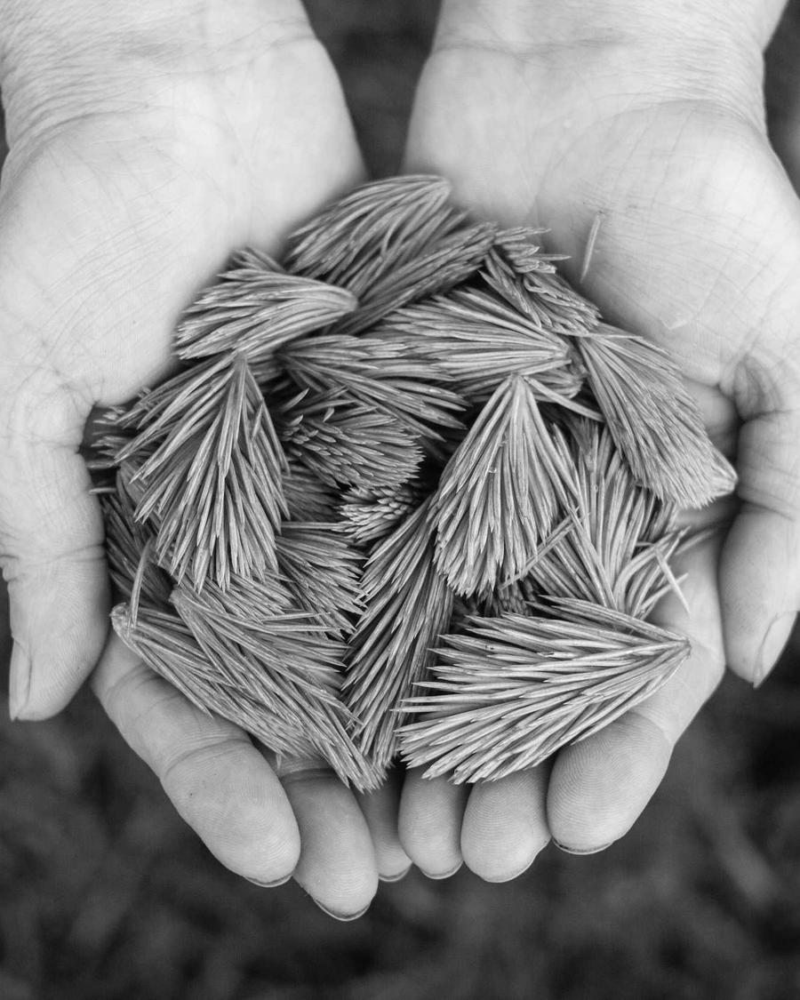
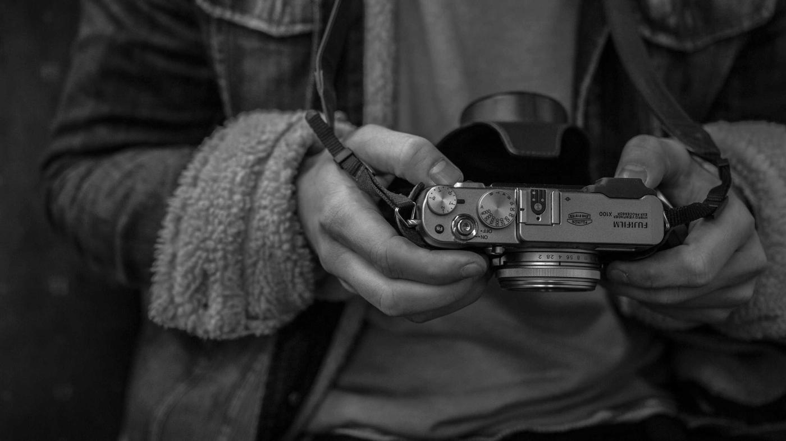
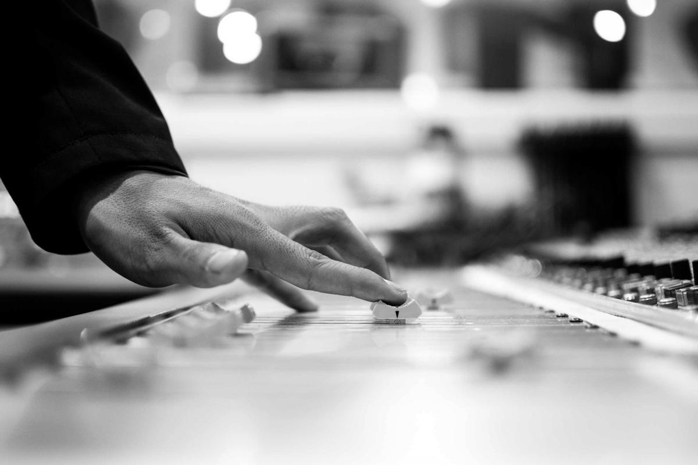
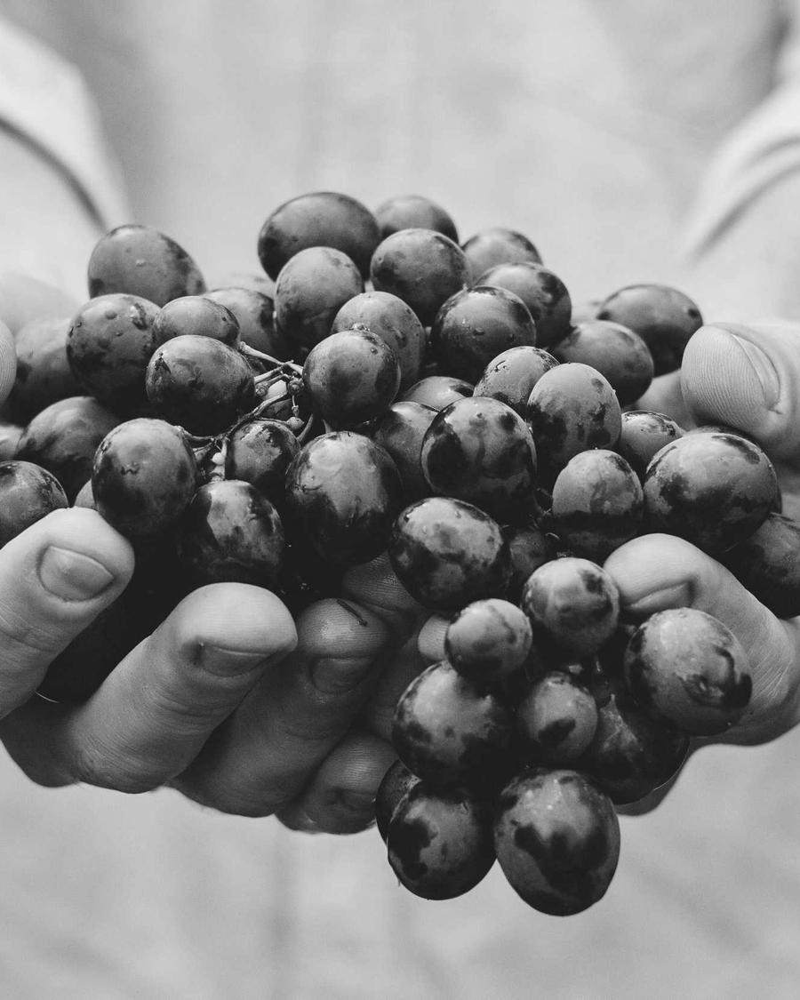
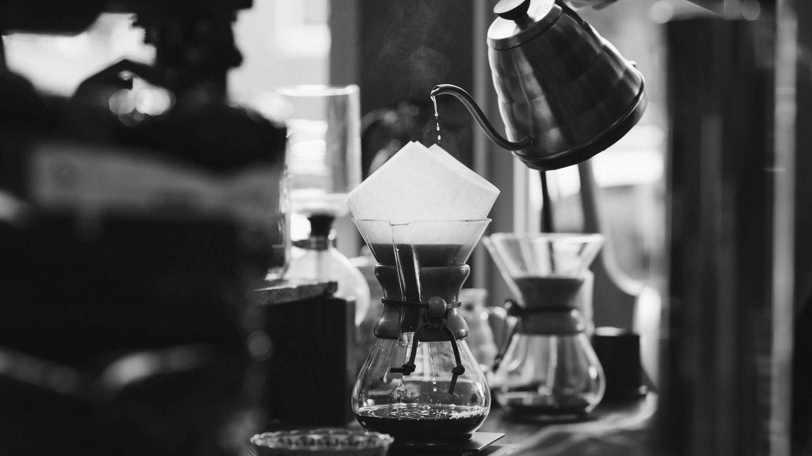

出版 / 2024

《潮汐》书籍装帧
给一本关于海岸的诗集做封面、内文与函套。
独立平面设计师。做书、做标识、做活动视觉，
也做屏幕里会动的东西。
选六个，按类别看一看；点上面的标签可以筛。
出版 / 2024
给一本关于海岸的诗集做封面、内文与函套。
品牌 / 2024

从种子到杯子的一整套字标与包装。
字要站得住，也要留得下呼吸。
活动 / 2023

海报、票券、舞台背景与一整季的动态图形。
出版 / 2023

一百二十件器物的摄影编排与印制监制。
空间 / 2022

一间小美术馆的标识、门牌与参观动线。
数字 / 2022

一款慢阅读应用的界面与图标系统。
这个类别还没有放上来的作品。
我是林屿，一个把排版当作盖房子的平面设计师，常驻上海。
2018 年从印刷厂的一台旧海德堡开始，后来做过出版社的美术编辑，2019 年起独立接活。我喜欢字被放得很大、纸有重量、颜色克制到只剩一处的那种东西。
合作方式很直接：先把要解决的问题说清楚，再决定它该是一本书、一个标识，还是一块屏幕。做过的东西横跨出版、品牌、活动、空间与数字，目前也接少量教学与评审。
有想做的东西，写封信就好。